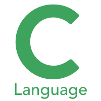

The Basics of C Programming
C is a computer programming language. That means that you can use C to create lists of instructions for a computer to follow. C is one of thousands of programming languages currently in use. C has been around for several decades and has won widespread acceptance because it gives programmers maximum control and efficiency. C is an easy language to learn. It is a bit more cryptic in its style than some other languages, but you get beyond that fairly quickly.
C is what is called a compiled language. This means that once you write your C program, you must run it through a C compiler to turn your program into an executable that the computer can run (execute). The C program is the human-readable form, while the executable that comes out of the compiler is the machine-readable and executable form. What this means is that to write and run a C program, you must have access to a C compiler. If you are using a UNIX machine (for example, if you are writing CGI scripts in C on your host's UNIX computer, or if you are a student working on a lab's UNIX machine), the C compiler is available for free. It is called either "cc" or "gcc" and is available on the command line. If you are a student, then the school will likely provide you with a compiler -- find out what the school is using and learn about it. If you are working at home on a Windows machine, you are going to need to download a free C compiler or purchase a commercial compiler. A widely used commercial compiler is Mic
rosoft's Visual C++ environment (it compiles both C and C++ programs). Unfortunately, this program costs several hundred dollars. If you do not have hundreds of dollars to spend on a commercial compiler, then you can use one of the free compilers available on the Web.